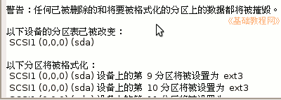

电脑操作基础
作者：TeliuTe 来源：基础教程网
磁盘分区和挂载点 返回目录 下一课这一课我们来学习Ubuntu下面的磁盘分区，下面我们来看一个练习；
1、磁盘分区
1）一般计算机里只有一个硬盘，为了方便使用往往划分成多个磁盘分区，点菜单“位置－计算机”，可以看到多个分区；
2）Windows或Ubuntu操作系统一般装在第一个分区，按照启动(boot)的要求这个分区要创建成主分区；
3）Windows系统的引导文件 NTLDR，在C:盘根目录中隐藏起来，通过这个文件来加载Windows的系统文件，
Ubuntu系统的引导文件 grub，在/boot文件夹中，然后加载Ubuntu的系统文件；
4）Windows分区管理是按照字母 C、D 、E、F 等等，称作C:盘、D:盘，
Ubutnu中分区是按照设备或作用来分，比如sda1、sda2等，或者分配到 / ，/boot，/home 文件夹，如果没有分配作用，就归到“可移动介质”里；
2、分区管理
1）在Windows中，可以在安装的时候分区，也可以在“管理－磁盘管理器”中删除和新建分区，
注意，删除分区同时也会删除里面的数据，所以要细心；
2）Ubuntu在安装时也可以分区，选择“手动”进入分区编辑器；
3、分区格式化
1）在Windows中，新建的分区可以格式化成 NTFS 类型或 Fat32 类型，在“我的电脑”里都可以正常使用；
2）在Ubuntu中，新建的分区可以格式化成 ext3，ext2，ntfs，fat32等各种类型，也都可以正常的使用；

4、挂载点
1）Ubuntu中系统文件夹一般是相对独立的，可以把某个文件夹关联到一个单独分区，
常见的文件夹有 /，/boot，/home，设定到不同的分区里，这些文件夹就叫该分区的“挂载点”；
2）/boot 是启动文件夹，里面存放系统启动所需的文件，/home 是用户文件夹，存放用户自己创建的图片、文档，或者下载的文件等；
3）交换分区swap，这个分区也必须占一个单独分区，主要用于虚拟内存用，一般大小跟实际内存相同；
4）对于已经设定挂载点的分区，系统启动时会自动加载该分区，打开挂载点文件夹，就等于打开了这个分区；
5）对于没有设定挂载点的分区，点菜单“位置－可移动介质”，选择相应的磁盘，系统会临时挂载到/media/disk 文件夹上；
6）这些分区也会在桌面上放一个图标，使用完了以后，可以点右键选“卸载文件卷”关闭，
U盘等可移动磁盘拔出前也要这样操作；
本节学习了在Ubuntu中磁盘分区和挂载点的基础知识，如果你成功地完成了练习，请继续学习下一课内容；
本教程由86团学校TeliuTe制作|著作权所有
基础教程网：http://teliute.org/
美丽的校园……
转载和引用本站内容，请保留版权信息和本站链接。